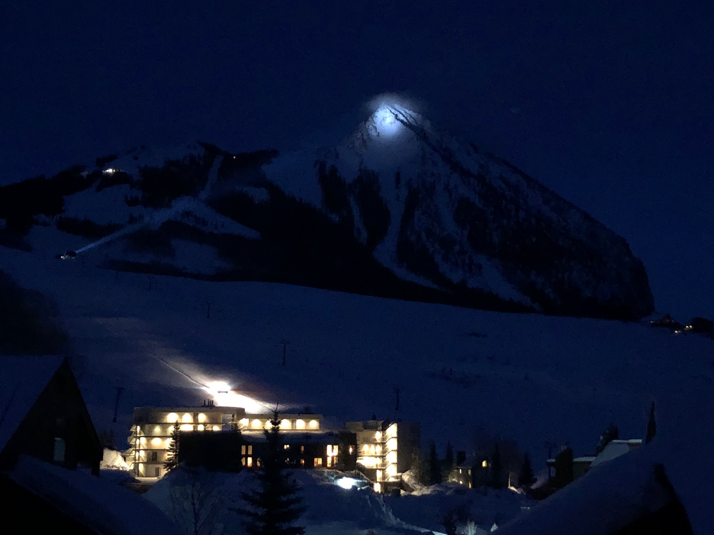
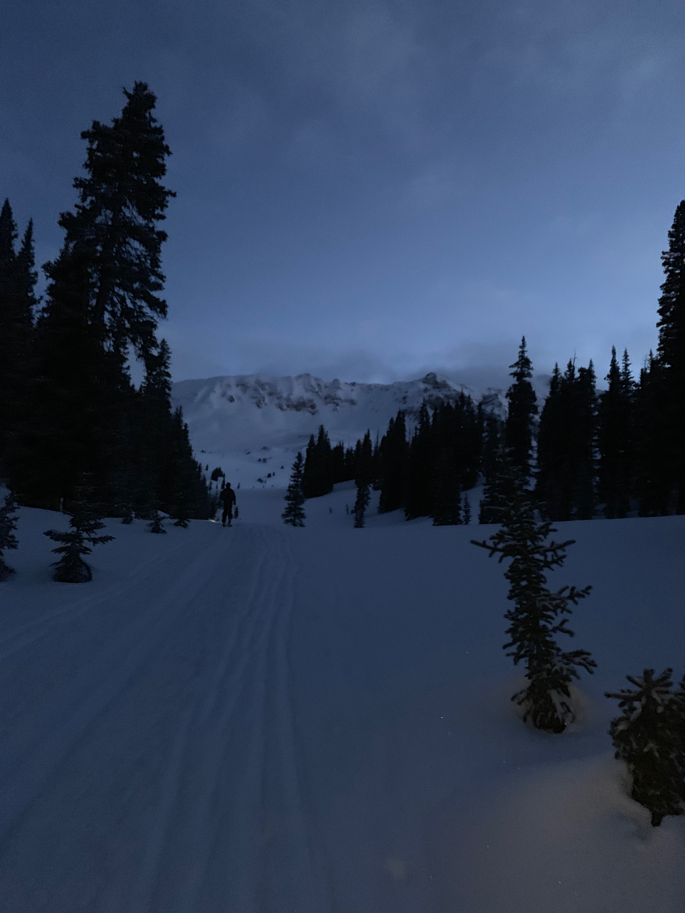
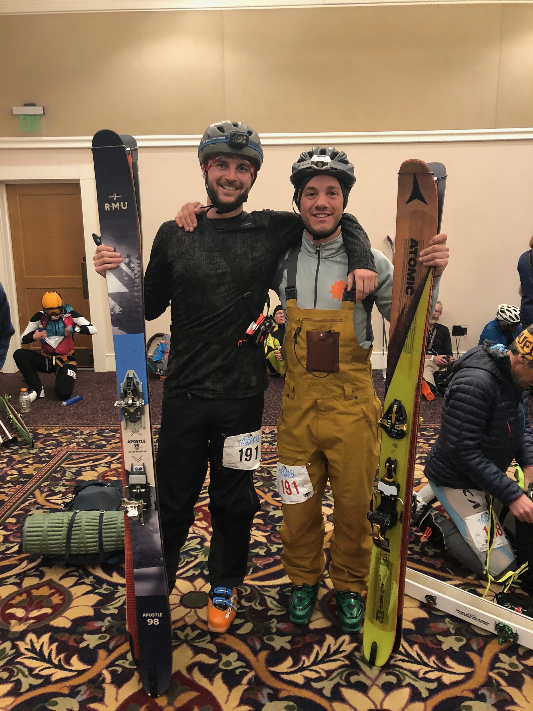

This past Friday night my friend Marco Vienna and I started running up Mt. Crested Butte on skis at midnight in a bid over Star Pass to end up in Aspen. This route is 37 miles, part of a Ski Mountaineering race called The Grand Traverse. We estimated the trip would take us 12 hours. Our friend (and support team) Danni Perri took this photo before the start of the race. Thank you so much for the support Danni!

For the first 5 hours of the race, we were doing great. We made it over Death Pass with plenty of time to spare and were actively passing other participants. Yes, it is actually called Death Pass - 2 people died on this section of the route while training for the race this year. There was a memorial on the racecourse.
We were heading up a high elevation valley called the Brush Creek Drainage. It was about 5 degrees out and I felt warm because we had been moving non-stop. Around this time we stopped for a few minutes to eat and drink water. And I got cold. It's not clear exactly what happened but my best guess is that I contracted mild hypothermia in my lungs which from then on made it extremely difficult to breathe.
We continued for the next two hours towards the next checkpoint, but my pace was much slower. Around six and a half hours in, I could only move a dozen meters before being forced to stop and catch my breath. This was a demoralizing rhythm, but we continued up the mountain. We made it to the Friends Hut checkpoint about 10 minutes before the cutoff. This checkpoint is right before a difficult climb over Star Pass, followed by the most difficult descent of the route.
While the rules of the race would have let us continue, at this point, I was pretty worried about how difficult it was for me to breathe. And there was no way I would have felt safe taking myself and friend up the pass. If my condition worsened at all, it would have put us both in an unacceptable amount of danger. If I couldn't get down under my own power, it would have been bad.
It was disappointing not to finish. But I am so happy we were able to get out there and try something truly difficult for our ability. Right as we decided not to continue, the sun finally rose after 7 hours of skiing in the dark, and we were rewarded with this view. It was the best silver lining.

Last fall I dragged Marco to Aspen for the Mountain Bike version of the Grand Traverse and this Spring he dragged me to Crested Butte for the ski version. Continuing the tradition we will be running this route in the fall (kidding... hopefully)
